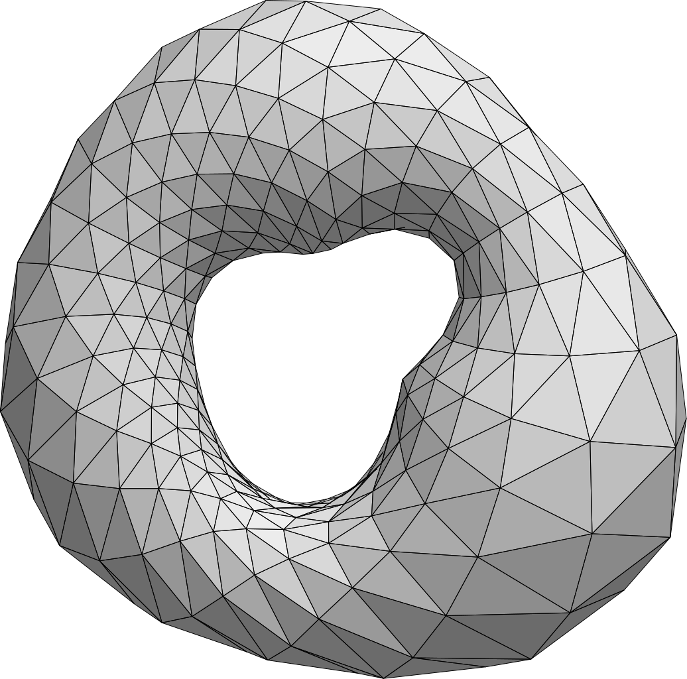

How to mesh an airplane wing surface
I recently defended my Masters thesis title 'Entire Domain Advancing Layer Surface Mesh (EDAMSurf) Generation'. In this blog post, I want to cover the gist of what I did in my graduate degree. I will try to write what I did in simpler terms so that anyone who is not a specialist in mesh generation can at least get the core idea of what I tried to achieve.
Before we get started, I just want to share a quote from the 'CFD Vision 2030 Study: A Path to Revolutionary Computational Aerosciences', a paper that is discussed in almost every computational aerodynamics conference and sets the agenda of the next decade in the field of CFD (Computational Fluid Dynamics). It reads
"Mesh generation and adaptivity continue to be significant bottlenecks in the CFD (computational fluid dynamics) workflow. Additionally, adaptive mesh techniques offer great potential, but have not seen widespread use due to issues related to software complexity, inadequate error estimation capabilities and complex geometries."
Hence, meshing is tricky business. What I did in my thesis was an attempt to simplify the process. Before getting into the details, let's define what is a mesh.
A mesh is a geometrical discretization of a domain that consists of (a) a collection of mesh entities of controlled size and distribution and (b) topological relationships or adjacencies forming the graph of the mesh. The mesh covers the domain with neither overlaps nor holes.
In simple terms, a mesh is a lego toy of small mesh elements (building blocks of a lego). But why do we need a mesh in the first place? And why do we need a surface mesh for an airplane? Let me answer that.
To solve for the flow over an airplane wing computationally, one has to define a volume mesh of the
domain (the wing of an airplane). The volume mesh needs a surface mesh to serve as its starting
point. Hence, generating a surface mesh is the first step towards generating a valid volume mesh. In
my
master's thesis, I developed a method to generate a quadrilateral dominant
anisotropic better suited mesh automatically using an input surface triangulation. Let's
find out the steps I used to do that.
Geometry Import
Usually, the surface mesh generation algorithm needs a geometrical representation of the solid body that is required to be meshed. Representing solid bodies as a collection of their boundaries (B-Rep) is quite common. Hence, solid bodies are represented by the elements which form these boundaries. For example, a cube may be stored as a collection of six squares which form it. For complex three dimenstional bodies, such as the wing of an airplane, it is common to use small triangular elements to represent it. An illustration of a triangulation of a torus can be seen in the following figure.
Since it is extremely simple to create a triangulation for a given domain with a given resolution (thanks to a plethora of freely available libraries), I choose it as the input to EDAMSurf. I used STL (Stereolithography) file format as the input as it is simple and one of the most commonly used formats.
Surface Segmentation
Once the surface triangulation is imported, we need to initialize the geometry. In other words, we need to create a ground truth for our mesh. This geometrical representation would help us in our mesh generation process and help in producing a reasonable mesh for the input triangulation. There are several geometry modules/libraries which can serve this purpose. The one I used is called the Common Geometry Module (CGM). It was developed at Sandia National Laboratories and is a really extensive geometry handling library.
CGM helps me import the triangulation as a faceted geometry (assume facet = triangle). But the more important thing it provides me with is the geometry query functions. It has an API for querying various things in the geometry. The most important API calls for me were the surface normal query and the point projection query. The surface normal query gives me the normal to the imported surface at a given point on it. The point projection query gives me the projected point on a surface.
Another obstacle where CGM comes to rescue is surface segmentation. The initial STL file contains the triangulation of the entire domain. It stores the triangles as a list. To generate my mesh in an advancing layer fashion, I need boundary curves (or boundaries of surfaces to start from). CGM segments the input surface triangulation into several sub surfaces on the basis of included angles between the triangles. In other terms, it is able to identify sharp corners on the surface segment the complete surface into sub surfaces on the basis of these sharp corners. These sharp corners of the surface (also referred as boundary curves of the surface) would become the seed layer or the first layer of the mesh. Also, each segmented sub surface can now be meshed independently.
The figures show the triangulation of a mechanical part. Each figure highlights the boundary curve of one of the segmented sub surfaces of the part.
This process of surface import and segmentation into sub surfaces creates the foundation of our mesh to build on.